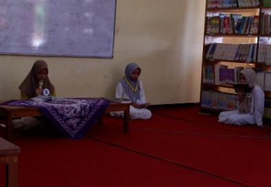

Ekstrakurikuler yang menjadi wadah bagi siswa untuk mempelajari seni membaca Al-Qur'an dengan baik, benar, dan indah sesuai kaidah tajwid serta lagu qiro'ah.
Qiro'ah merupakan salah satu ekstrakurikuler di bawah naungan REMAJA MASJID SMANSAPA yang berfokus pada pengembangan kemampuan membaca Al-Qur'an secara tartil dan merdu.
Melalui kegiatan ini, anggota dibimbing untuk memahami tajwid, makharijul huruf, serta berbagai teknik dan lagu dalam seni qiro'ah.
Selain meningkatkan kemampuan membaca Al-Qur'an, Qiro'ah juga menjadi sarana membangun rasa percaya diri dan kecintaan terhadap kitab suci Al-Qur'an.
Mempelajari hukum bacaan dan penerapannya dalam membaca Al-Qur'an.
Belajar berbagai maqamat atau lagu yang digunakan dalam seni membaca Al-Qur'an.
Mengisi acara keagamaan dan kegiatan sekolah dengan tilawah Al-Qur'an.